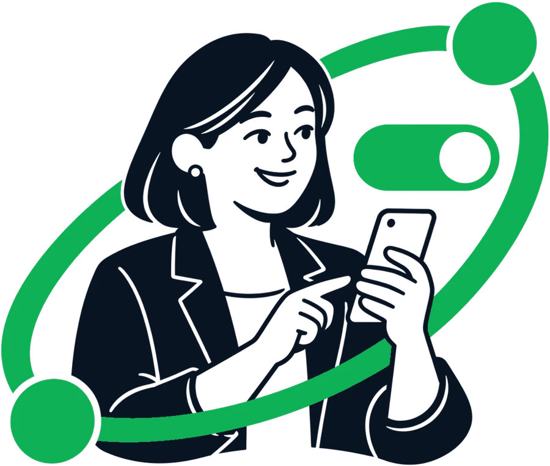

1
Tu cuenta
Tus datos y tu negocio
2
Tu WhatsApp
Conectar por QR y activar Kinti · IA
Paso 1 de 2 · Tu cuenta
Crea tu cuenta
Empieza con tus datos y los de tu negocio. En el paso 2 conectas tu WhatsApp y presentas a tu asistente virtual  Kinti · IA
Kinti · IA
Carla Mendoza
carla@kusihogar.pe
Kusi Hogar
Así te presentará Kinti
+51987 654 321
Lo conectas con un QR
••••••••••
Seguridad: buena
8 caracteres o más
Un número
Un símbolo (!#@)
Acepto los Términos y la Política de privacidad, y autorizo el tratamiento de mis datos personales (Ley N.° 29733).
Quiero recibir novedades de SIRAC por correo (opcional)
¿Ya tienes cuenta? Inicia sesión

Datos de demostración · Kusi Hogar es ficticia
WhatsApp · por conectar
+51 987 654 321
Tu negocio
Kusi Hogar · Mesa Redonda
Registra tu negocio y conecta tu WhatsApp
Escaneas un QR con tu WhatsApp Business y Kinti responde en segundos, avisando que es un asistente virtual. Tu equipo cierra la venta.